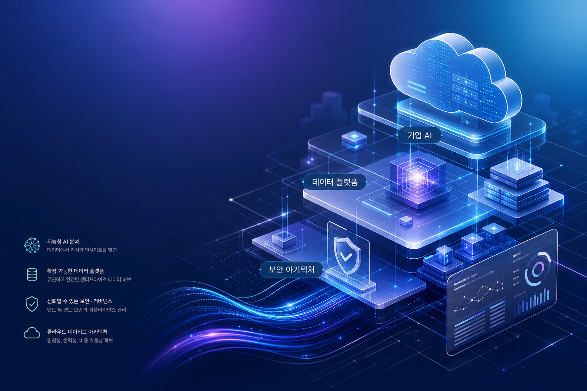
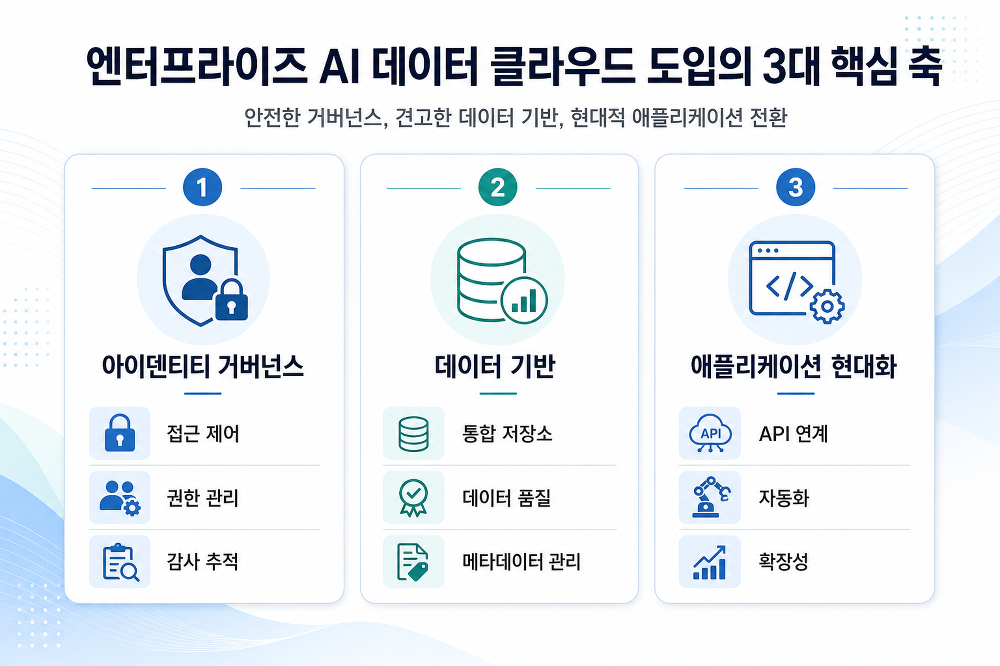
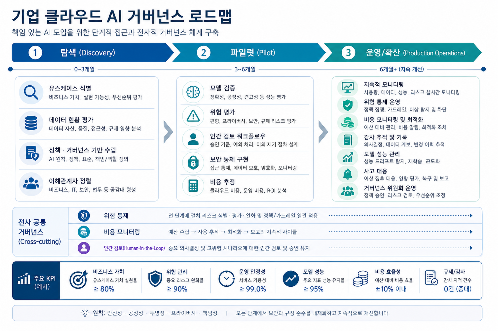

Serverless Managed Service for Apache Spark runtime 3.0 features
Learn about the latest features in serverless Managed Service for Apache Spark runtime version 3.0 enabling a wide range of workflows.
구글 클라우드 블로그의 신규·최근 자료를 바탕으로 기술 변화의 의미를 기업 적용, 한국 기업 시사점, 실행 전략, 리스크 거버넌스 관점에서 재구성했습니다.

오늘의 판단: Gemini, Gemini Enterprise, BigQuery, AlloyDB, IAM, VPC 관련 신호는 단일 기능 업데이트보다 기업 운영 체계의 변화로 읽어야 합니다. 데이터 계층, 신원·권한 통제, 비용 가시성, 현업 적용 프로세스가 함께 준비될 때 기술 발표가 실제 성과로 연결됩니다.
Learn about the latest features in serverless Managed Service for Apache Spark runtime version 3.0 enabling a wide range of workflows.

기업은 데이터 웨어하우스, 운영 데이터베이스, 애플리케이션 로그를 분리된 저장소가 아니라 인공지능 실행의 공통 기반으로 다루어야 합니다.
사람 계정 중심의 권한 관리만으로는 에이전트, 도구 호출, 데이터 접근을 충분히 설명하기 어렵습니다. 작업 단위 감사와 정책 집행이 중요해집니다.
인프라 현대화는 비용 절감만이 아니라 빠른 실험, 신뢰 가능한 배포, 보안 기준의 자동화를 가능하게 하는 실행 기반이 되어야 합니다.
| 관점 | 의미 | 실행 질문 |
|---|---|---|
| 업무 가치 | 기능 도입보다 매출, 비용, 리스크 지표와 연결해야 합니다. | 어떤 업무 지표가 개선되어야 성공으로 볼 수 있습니까? |
| 기술 준비도 | 데이터 품질, 접근 권한, 배포 환경, 관측성이 선행되어야 합니다. | 시범 적용 전에 필요한 최소 통제는 무엇입니까? |
| 운영 거버넌스 | 비용, 보안, 법무, 현업 승인 흐름이 자동화되어야 확산됩니다. | 에이전트 실행 로그와 예외 승인 기록을 남기고 있습니까? |
한국 기업은 빠른 도입 의지가 강한 반면, 개인정보, 내부망, 계정 권한, 비용 승인, 레거시 시스템 연계에서 병목이 자주 발생합니다. 따라서 구글 클라우드 기술 신호를 도입 후보 목록으로만 보지 말고, 사전 통제와 운영 모델을 포함한 전환 과제로 해석하는 것이 바람직합니다.

추론, 검색, 데이터 처리, 로그 저장 비용을 업무 단위로 추적해야 합니다.
민감 데이터 접근은 최소 권한, 마스킹, 감사 로그 기준으로 관리해야 합니다.
정확도뿐 아니라 실패 유형, 환각, 권한 초과, 예외 처리까지 평가해야 합니다.
# GCP Daily Blog Image Prompts 20260604 ## Image Prompt 1 - 목적: 히어로 이미지, 일일 전략 블로그의 전체 맥락 제시 - 삽입 위치: 본문 상단 hero 아래 - image2 prompt: Korean executive technology blog hero visual, abstract Google Cloud enterprise AI and data platform, secure cloud architecture, no logos, clean editorial style, premium gradient, subtle Korean text blocks are allowed but keep them concise and legible, 16:9 - 권장 비율: 16:9 - alt 텍스트: 구글 클라우드 기반 엔터프라이즈 인공지능과 데이터 전략을 표현한 추상 이미지 ## Image Prompt 2 - 목적: 기술 변화와 기업 적용 관점 인포그래픽 - 삽입 위치: 핵심 트렌드 분석 섹션 - image2 prompt: Korean infographic for enterprise AI data cloud adoption, three pillars: identity governance, data foundation, application modernization, clean cards, readable Korean labels, no brand logos, 16:9 - 권장 비율: 16:9 - alt 텍스트: 엔터프라이즈 인공지능 도입을 위한 데이터, 보안, 인프라 세 축 인포그래픽 ## Image Prompt 3 - 목적: 실행 전략과 거버넌스 로드맵 시각화 - 삽입 위치: 실행 전략 섹션 - image2 prompt: Korean roadmap visual for enterprise cloud AI governance, stages from discovery to pilot to production operations, risk controls, cost monitoring, human review, polished consulting report style, no logos, 16:9 - 권장 비율: 16:9 - alt 텍스트: 클라우드 인공지능 거버넌스와 운영 전환 로드맵 이미지